<title>El calendario a la vista</title>
<meta name="claude:viewport-fit-sides" content="cover">
<link rel="preconnect" href="https://fonts.googleapis.com">
<link rel="preconnect" href="https://fonts.gstatic.com" crossorigin>
<link rel="stylesheet" href="https://fonts.googleapis.com/css2?family=EB+Garamond:ital,wght@0,400;0,500;1,400&family=Inter+Tight:wght@400;500;600&display=swap">
<style>
/* Una columna de papel y tinta, como las páginas de maquetas: lo de hoy en terracota, lo propuesto
   en oliva, y cada forma con sus fotos de la app de verdad (genera.js) y lo medido (medidas.json). */
:root{
  --paper:#F2EDE0;--card:#FBF8F1;
  --ink:#1F1C17;--ink-2:#4A453C;--ink-3:#77705F;
  --line:#C9C0A8;
  --olive:#3E5A3A;--olive-soft:rgba(62,90,58,.12);
  --terra:#A85E43;--terra-soft:rgba(168,94,67,.12);
  --display:'EB Garamond',Georgia,'Times New Roman',serif;
  --ui:'Inter Tight',system-ui,-apple-system,'Segoe UI',sans-serif;
}
@media (prefers-color-scheme: dark){:root:not([data-theme="light"]){
  --paper:#1d1a14;--card:#2c271f;--ink:#EDE5D3;--ink-2:#c0b49e;--ink-3:#B2A995;--line:#4d4536;
  --olive:#98B58B;--olive-soft:rgba(122,154,109,.16);--terra:#E8A98F;--terra-soft:rgba(232,169,143,.14);color-scheme:dark;
}}
:root[data-theme="dark"]{
  --paper:#1d1a14;--card:#2c271f;--ink:#EDE5D3;--ink-2:#c0b49e;--ink-3:#B2A995;--line:#4d4536;
  --olive:#98B58B;--olive-soft:rgba(122,154,109,.16);--terra:#E8A98F;--terra-soft:rgba(232,169,143,.14);color-scheme:dark;
}
*{box-sizing:border-box}
body{margin:0;background:var(--paper);color:var(--ink);font-family:var(--ui);font-size:16px;line-height:1.55;-webkit-text-size-adjust:100%}
main{max-width:880px;margin:0 auto;padding-left:max(16px,env(safe-area-inset-left,0px));padding-right:max(16px,env(safe-area-inset-right,0px));padding-block:40px 72px}
h1,h2,h3{font-family:var(--display);font-style:italic;font-weight:400;line-height:1.15;margin:0;text-wrap:balance}
h1{font-size:clamp(32px,6vw,44px)}
h2{font-size:clamp(23px,4vw,28px);margin:44px 0 10px;padding-top:22px;border-top:1px solid var(--line)}
h3{font-size:22px;margin:28px 0 8px}
h3 .rec{font-family:var(--ui);font-style:normal;font-size:12px;letter-spacing:.12em;text-transform:uppercase;margin-left:8px;vertical-align:3px}
p,li{color:var(--ink-2);max-width:68ch}
p{margin:0 0 12px}
ul,ol{margin:0 0 14px;padding-left:22px}
li{margin-bottom:6px}
strong{color:var(--ink);font-weight:500}
code{font-size:13px;background:var(--card);border:1px solid var(--line);border-radius:4px;padding:0 4px;overflow-wrap:anywhere}
a{color:var(--olive)}
.eyebrow{font-size:12px;letter-spacing:.14em;text-transform:uppercase;color:var(--ink-3);margin-bottom:10px}
.lead{font-family:var(--display);font-size:21px;color:var(--ink);max-width:62ch;margin-top:14px}
.cita{font-family:var(--display);font-style:italic;font-size:19px;color:var(--ink);border-left:3px solid var(--line);padding:2px 0 2px 14px;margin:18px 0}
.nota{font-size:13px;color:var(--ink-3)}
.rec{color:var(--olive)}
.medido{background:var(--olive-soft);border-radius:10px;padding:10px 14px;margin:12px 0;font-size:14px;color:var(--ink);max-width:68ch}
.medido.malo{background:var(--terra-soft)}
.fotos{display:grid;gap:14px;grid-template-columns:minmax(0,2.3fr) minmax(0,1fr);align-items:start;margin:14px 0}
.fotos.movil{grid-template-columns:repeat(auto-fit,minmax(150px,1fr));max-width:720px}
.fotos.ancha{grid-template-columns:minmax(0,1fr) minmax(0,1fr)}
@media (max-width:640px){.fotos,.fotos.ancha{grid-template-columns:1fr}.fotos.movil{grid-template-columns:repeat(2,minmax(0,1fr))}}
figure{margin:0;min-width:0}
figure img{display:block;width:100%;height:auto;border:1px solid var(--line);border-radius:6px}
figcaption{font-size:13px;color:var(--ink-3);margin-top:6px}
.tabla{overflow-x:auto;margin:14px 0;border:1px solid var(--line);border-radius:10px;background:var(--card)}
table{border-collapse:collapse;width:100%;font-size:14px}
th,td{text-align:left;vertical-align:top;padding:9px 12px;border-bottom:1px solid var(--line)}
tr:last-child td{border-bottom:none}
th{font-size:12px;letter-spacing:.08em;text-transform:uppercase;color:var(--ink-3);font-weight:500}
td{color:var(--ink-2)}
td.num{white-space:nowrap}
td b{color:var(--ink);font-weight:500}
.mal{color:var(--terra)}
details{margin:14px 0;border:1px solid var(--line);border-radius:10px;background:var(--card);padding:10px 14px}
details summary{cursor:pointer;color:var(--ink);font-weight:500}
details[open] summary{margin-bottom:8px}
details p,details li{font-size:14px}
.pregunta{border-left:3px solid var(--terra);padding:4px 0 4px 14px;margin:22px 0}
</style>

<main>
  <div class="eyebrow">PACE · el calendario antes de elegir el día · 16 nov. 2026</div>
  <h1>El calendario a la vista</h1>
  <p class="cita">«Aquí en web no habría que poner una opción para sincronizar el calendario? Es una de las cosas que más valor le dan a la app + no sé como lo tendríamos que implementar en teléfono».</p>
  <p class="lead">Sí. Hoy el calendario solo sale después de elegir el día, y antes no se ve. Aquí van tres formas de enseñarlo en la tarjeta, lo que hace al tocarlo en cada sitio y el plan para el iPhone.</p>
  <p>Todo está pintado sobre la app de verdad, a las 20:35 de un lunes, como en tu captura. No hay nada montado: espera tus letras (la tabla del final).</p>

  <h2>Lo que hay hoy</h2>
  <p>«Al calendario» sale cuando ya elegiste el día: en el ordenador, junto a «Cambiar»; en el móvil, al pie de «Ver todo». Abre la hoja «Tu día en el calendario», con un sitio por fila:</p>
  <div class="tabla"><table>
    <tr><th>Dónde</th><th>Adónde puede ir tu día</th></tr>
    <tr><td><b>Web, hoy</b></td><td>Solo a un archivo, que se abre con tu calendario (Google, Outlook, Apple…). No se pone al día solo: Google y Outlook esperan a tus altas.</td></tr>
    <tr><td><b>Web, con tus altas</b></td><td>Google Calendar y Outlook, con «Mantenerlo al día solo» en pruebas, y el archivo.</td></tr>
    <tr><td><b>Android</b></td><td>El calendario del móvil (el de tu cuenta de Google o de Microsoft), que se pone al día solo mientras PACE está abierto, y el archivo.</td></tr>
    <tr><td><b>iPhone</b></td><td>Solo el archivo, que se comparte.</td></tr>
  </table></div>
  <div class="fotos">
    <figure><figcaption><b>Hoy</b> · 1280 × 800: nada dice que tu día puede ir al calendario</figcaption></figure>
    <figure>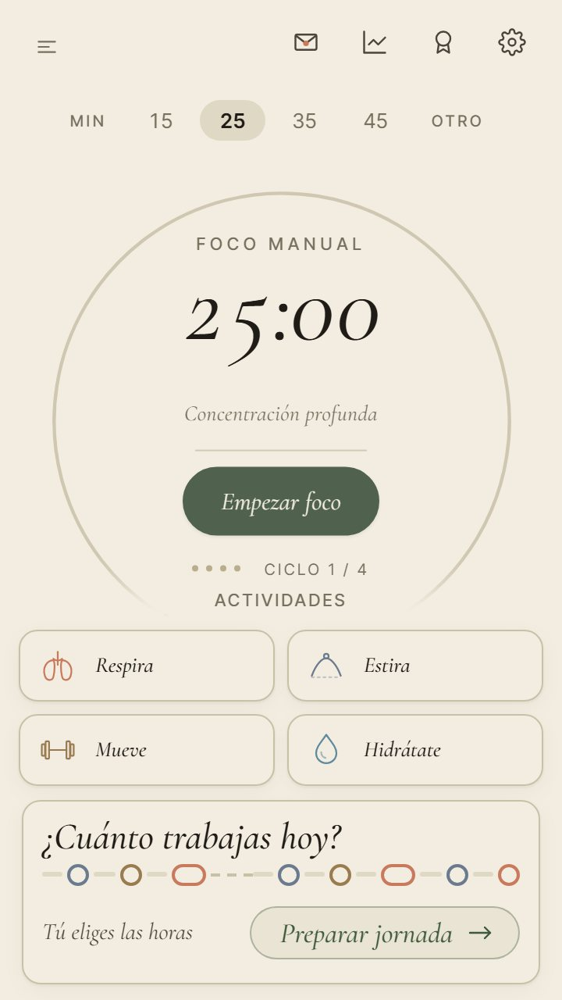<figcaption><b>Hoy</b> · 360 × 640</figcaption></figure>
  </div>

  <h2>Tres formas de enseñarlo</h2>
  <p>Las tres van en la tarjeta «¿Cuánto trabajas hoy?», sin tapar nada. En el móvil van en la tarjeta corta: la pregunta entera (la de después de «Preparar jornada») ya va justa con la letra grande y no le cabe nada más. Una vez elegido el día, sigue el «Al calendario» de siempre.</p>

  <h3>A · Un enlace que dice cómo está <span class="rec">Recomendada</span></h3>
  <p>«Al calendario», con un dibujo pequeño de calendario y en verde, como el de después de elegir. En el ordenador va junto a «Ajustar el horario». En el móvil, al final de la línea del día, como «Ver todo» en el día ya elegido. Cuando ya está conectado dice <strong>«Calendario conectado»</strong> (en el móvil, «Conectado»).</p>
  <div class="fotos">
    <figure><figcaption><b>A</b> · 1280 × 800</figcaption></figure>
    <figure>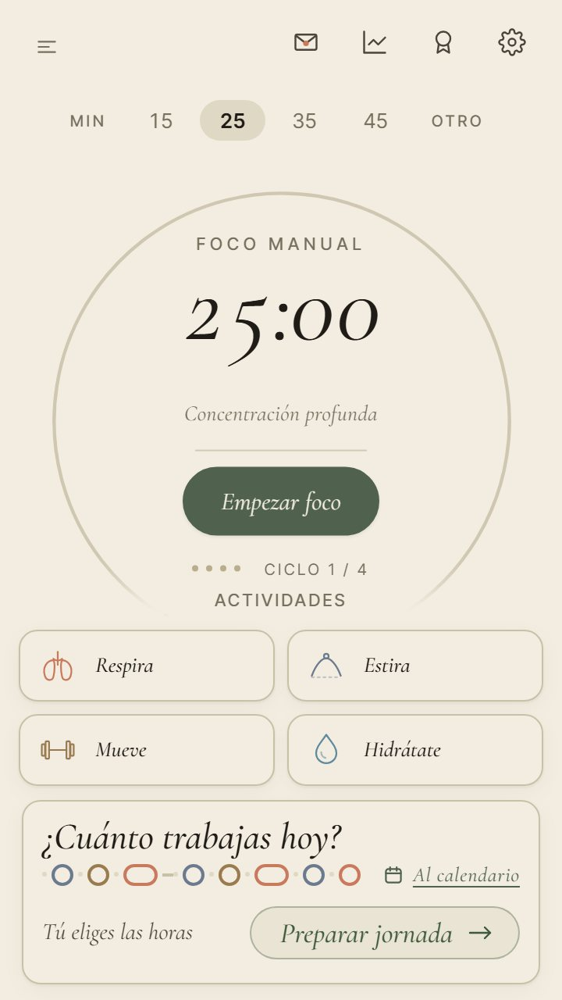<figcaption><b>A</b> · 360 × 640</figcaption></figure>
  </div>
  <div class="fotos">
    <figure>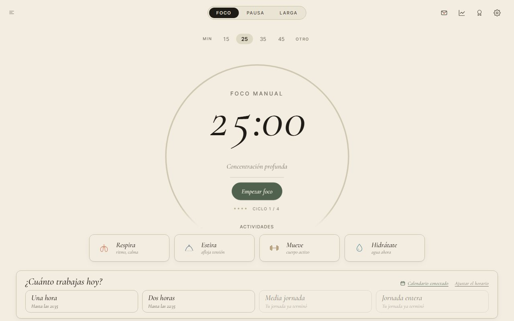<figcaption><b>A, ya conectado</b> · lo que dice al día siguiente</figcaption></figure>
    <figure>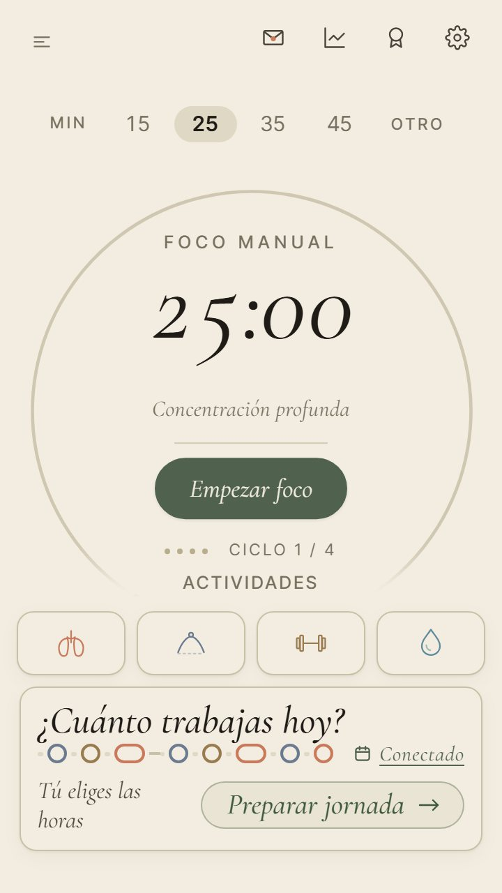<figcaption><b>A, conectado</b> · con la letra al 115 %</figcaption></figure>
  </div>
  <div class="fotos movil">
    <figure>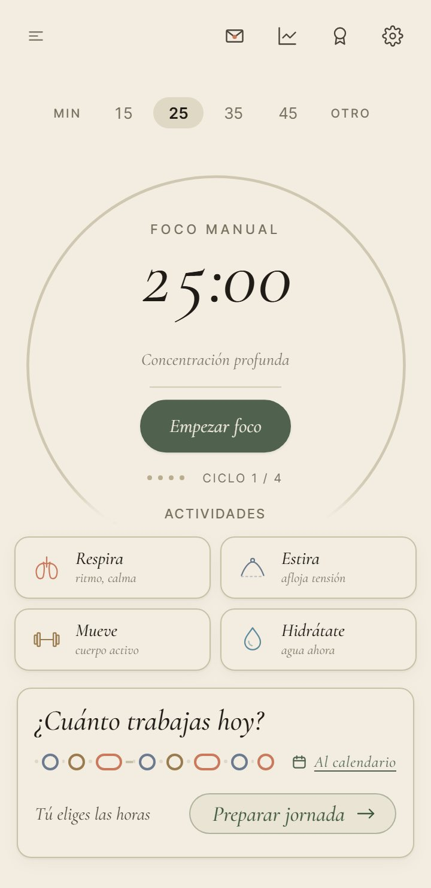<figcaption>360 × 740</figcaption></figure>
    <figure>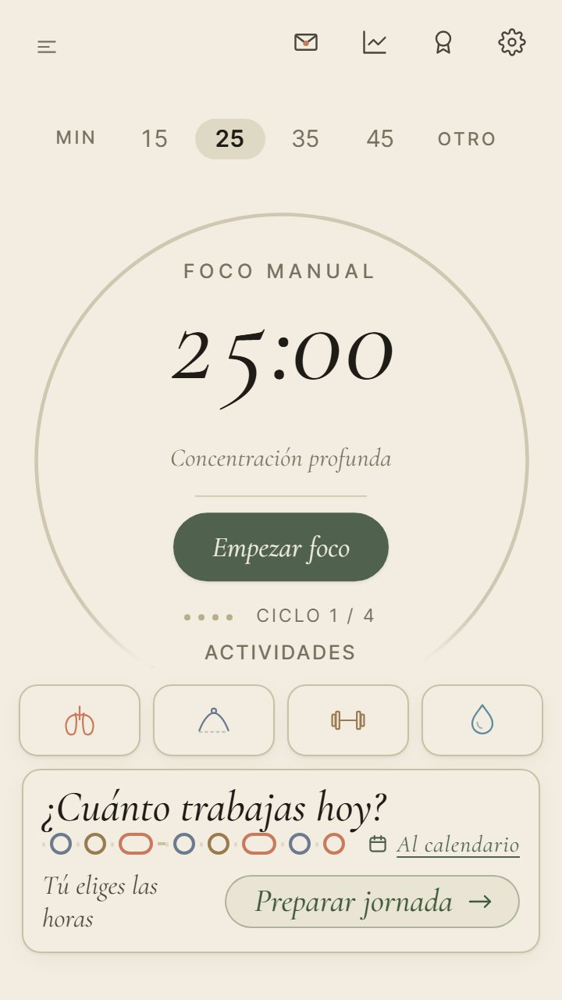<figcaption>Letra al 115 %</figcaption></figure>
    <figure>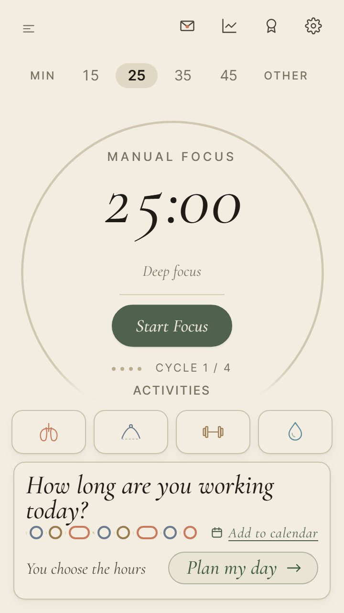<figcaption>En inglés, al 115 %</figcaption></figure>
  </div>
  <p class="medido"><strong>Medido:</strong> ningún scroll en las cuatro pantallas, ni con la letra al 115 % ni en inglés. El aro no cambia y el enlace no pisa nada. En el móvil el dedo tiene 44 px de alto sin que la tarjeta crezca. «Calendario conectado» no cabía al final de la línea con la letra grande; por eso en el móvil dice «Conectado».</p>
  <p><strong>Por qué la recomiendo:</strong> es lo mismo que ya ves después de elegir, así que no hay nada nuevo que aprender. No promete nada, porque lo que hace se cuenta en la hoja, y en la web de hoy dice «con un archivo». Y no quita sitio. <strong>Lo malo:</strong> es discreta. Si la quieres más visible, en el ordenador puede ir un punto más grande que «Ajustar el horario».</p>

  <h3>B · Un interruptor «Al calendario»</h3>
  <p>La palabra y el mismo interruptor pequeño de «comes». Encendido quiere decir que, cuando elijas, tu día va al calendario.</p>
  <div class="fotos">
    <figure>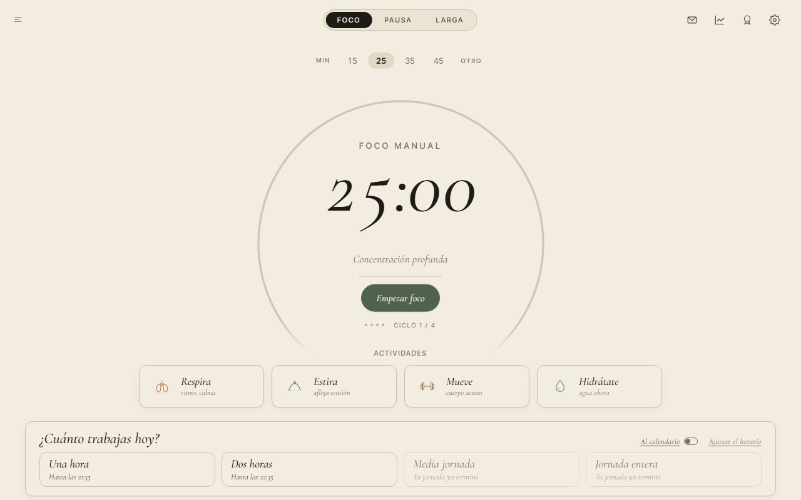<figcaption><b>B</b> · 1280 × 800</figcaption></figure>
    <figure>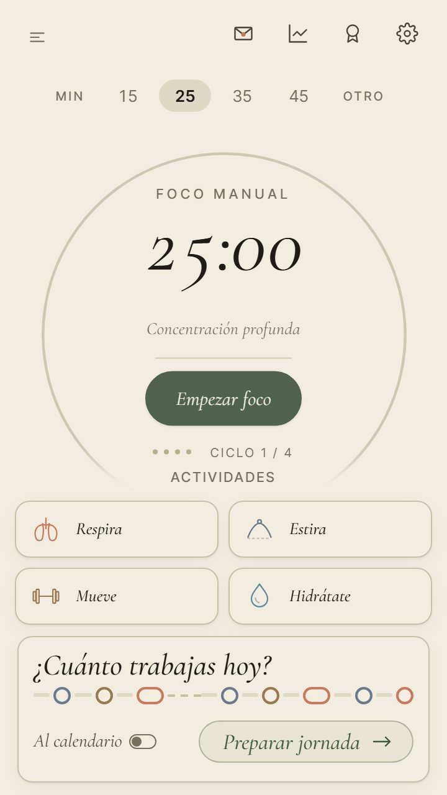<figcaption><b>B</b> · 360 × 640</figcaption></figure>
  </div>
  <p class="medido"><strong>Medido:</strong> ningún scroll y nada pisado. En el móvil ocupa el sitio de «Tú eliges las horas» y, con tu semana guardada, el de «Jornada entera, 9:00–17:00», que se perdería. Con la letra al 115 % se parte en dos líneas.</p>
  <p><strong>Lo malo:</strong> un interruptor se lee como «sincronizar», y en la web de hoy lo único que hay es un archivo que no se pone al día. Encendido, no diría la verdad.</p>

  <h3>C · Una fila propia</h3>
  <p>Una línea bajo las opciones: «Tu día, en tu calendario: cada bloque con su pausa», y a la derecha «Al calendario ›».</p>
  <div class="fotos">
    <figure>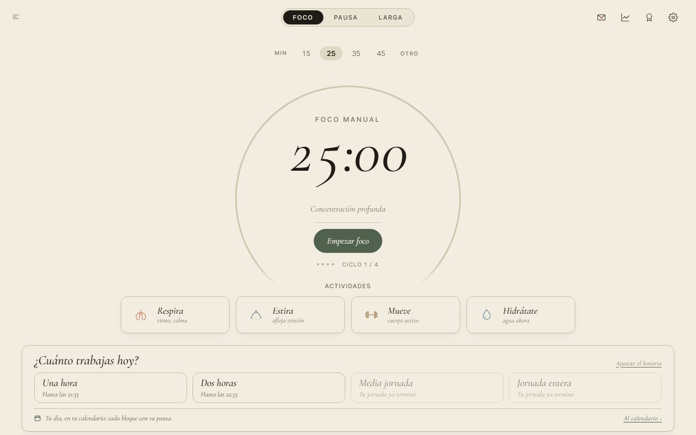<figcaption><b>C</b> · 1280 × 800: el aro encoge</figcaption></figure>
    <figure>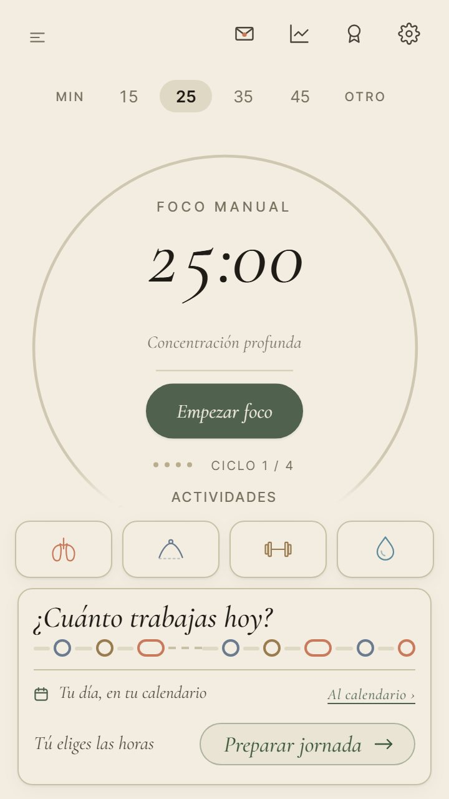<figcaption><b>C</b> · 360 × 640: las Actividades pierden su nombre</figcaption></figure>
  </div>
  <p class="medido malo"><strong>Medido:</strong> la tarjeta crece 38 px. En el ordenador el aro pierde 45 px (de 479 a 434 a 1280 × 800, de 372 a 327 a 1536 × 710). En el móvil no cabe: con la letra normal, las Actividades se recogen en una fila de dibujos sin nombre (eso solo debe pasar con la letra grande), y con la letra al 115 % la home pide 63 px de scroll (91 en inglés).</p>
  <p><strong>Lo malo:</strong> es la más visible, pero rompe la home sin scroll.</p>

  <div class="tabla"><table>
    <tr><th>Medido</th><th>1280 × 800</th><th>1536 × 710</th><th>360 × 640</th><th>360 × 740</th><th>640 al 115 %</th><th>En inglés al 115 %</th></tr>
    <tr><td><b>Hoy</b></td><td class="num">aro 479</td><td class="num">aro 372</td><td class="num">sin scroll</td><td class="num">sin scroll</td><td class="num">sin scroll</td><td class="num">sin scroll</td></tr>
    <tr><td><b>A</b></td><td class="num">aro 479</td><td class="num">aro 372</td><td class="num">sin scroll</td><td class="num">sin scroll</td><td class="num">sin scroll</td><td class="num">sin scroll</td></tr>
    <tr><td><b>B</b></td><td class="num">aro 479</td><td class="num">aro 372</td><td class="num">sin scroll</td><td class="num">sin scroll</td><td class="num">sin scroll, dos líneas</td><td class="num">sin scroll</td></tr>
    <tr><td><b>C</b></td><td class="num mal">aro 434</td><td class="num mal">aro 327</td><td class="mal">Actividades sin nombre</td><td class="num mal">aro de 331 a 313</td><td class="num mal">63 px de scroll</td><td class="num mal">91 px de scroll</td></tr>
  </table></div>
  <p class="nota">Ninguna pisa nada ni se sale de la tarjeta. El aro, en px de diámetro.</p>

  <h2>Qué pasa al tocarla</h2>
  <p>Con la A (y lo mismo con las otras dos), tocar «Al calendario» antes de elegir abre la hoja de siempre, «Tu día en el calendario», todavía sin día. Arriba dice: <strong>«Cuando elijas cuánto trabajas, tu día irá a tu calendario: cada bloque con su pausa.»</strong> La hoja sale solo porque la tocas, como hoy. Lo demás depende de dónde estés:</p>
  <div class="tabla"><table>
    <tr><th>Dónde</th><th>Qué ofrece la hoja</th><th>La primera vez</th><th>Después</th></tr>
    <tr><td><b>Web, hoy</b></td><td>Solo el archivo, y lo dice: «En la web, PACE te da un archivo y tu calendario lo añade. Si cambias el día, descárgalo otra vez.»</td><td>«Al elegir»: el archivo se descarga en cuanto eliges cuánto trabajas. No conecta nada ni lee reuniones.</td><td>El enlace sigue diciendo «Al calendario». Nada se pone al día solo.</td></tr>
    <tr><td><b>Web, con tus altas</b></td><td>Google Calendar y Outlook con «Conectar», y el archivo.</td><td>«Conectar» abre la ventana de Google o de Microsoft en el mismo toque, lee tus reuniones de hoy y deja «Mantenerlo al día solo» encendido, en pruebas. Las opciones de la tarjeta ya rodean tus reuniones.</td><td>Al elegir, tu día llega solo en un minuto. El permiso de Google dura una hora y el de Microsoft un día: al volver otro día, la hoja dice «Poner al día» y lo pide otra vez. El llavero de v1 lo arregla.</td></tr>
    <tr><td><b>Android</b></td><td>El calendario del móvil con «Conectar», y el archivo.</td><td>«Conectar» pide el permiso de Android, lee tus reuniones y deja «Mantenerlo al día solo» encendido (es de PACE completo, abierto hasta v1; después, sin él, lleva el candado de hoy).</td><td>«Conectado». Cada día que eliges va solo, mientras PACE está abierto. El permiso no caduca.</td></tr>
    <tr><td><b>iPhone, hoy</b></td><td>Solo el archivo, con «Compartir».</td><td>«Al elegir»: en cuanto eliges, se abre compartir para mandarlo a Calendario.</td><td>Como en la web de hoy.</td></tr>
    <tr><td><b>iPhone, con el plan</b></td><td>El calendario del iPhone con «Conectar», y el archivo.</td><td>Como en Android: la pregunta de iOS, tus reuniones y «Mantenerlo al día solo».</td><td>Como en Android.</td></tr>
  </table></div>
  <div class="fotos ancha">
    <figure>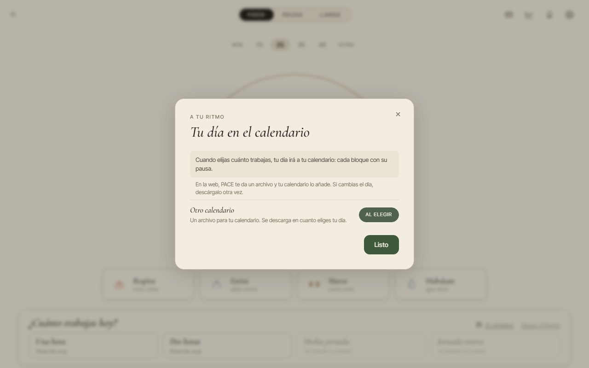<figcaption><b>Web, hoy</b> · solo el archivo, dicho claro</figcaption></figure>
    <figure>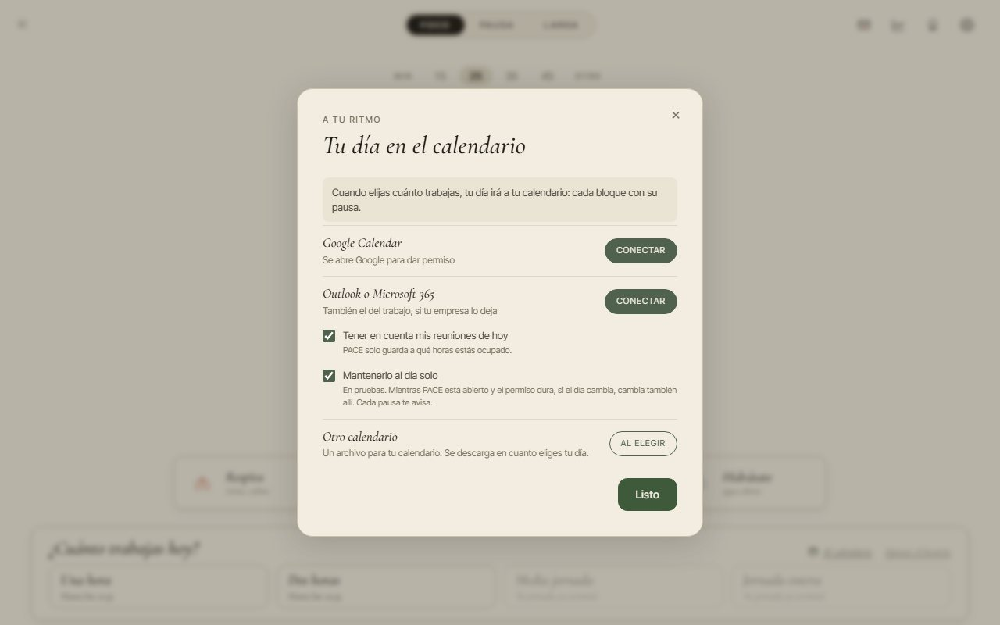<figcaption><b>Web, con tus altas</b> · «Mantenerlo al día solo» en pruebas</figcaption></figure>
  </div>
  <div class="fotos movil">
    <figure><figcaption><b>Android</b></figcaption></figure>
    <figure>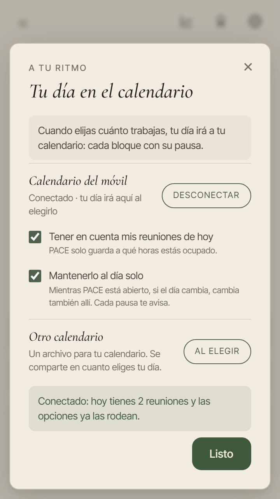<figcaption><b>Android, tras «Conectar»</b></figcaption></figure>
    <figure>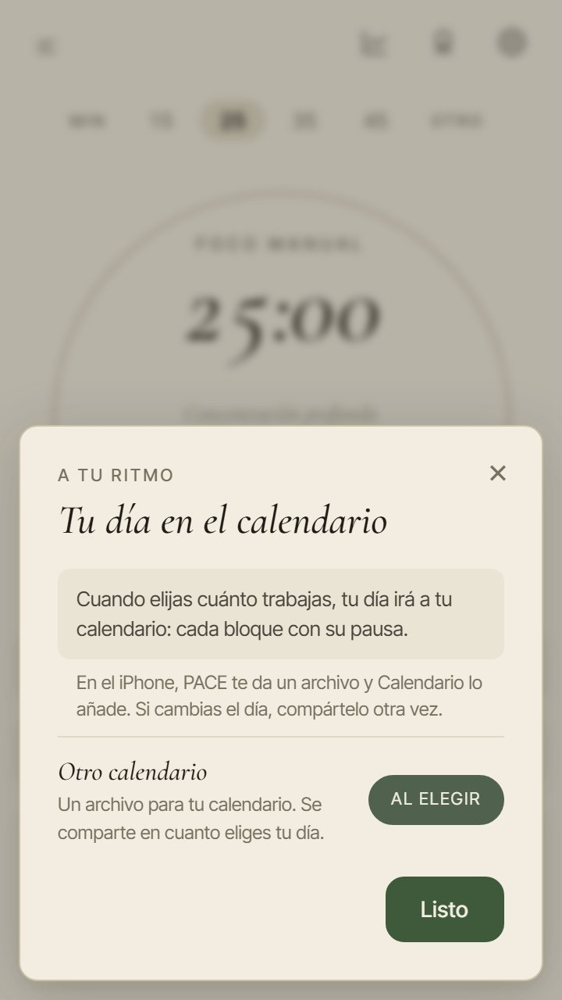<figcaption><b>iPhone, hoy</b></figcaption></figure>
    <figure>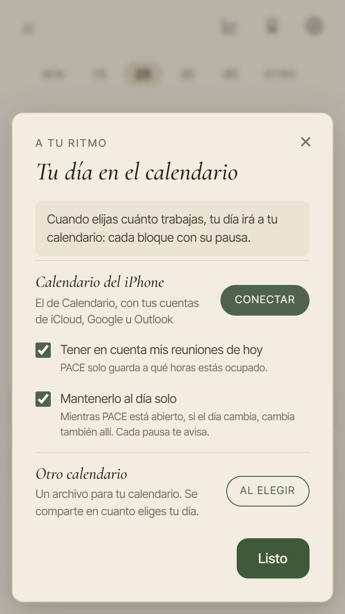<figcaption><b>iPhone, con el plan</b></figcaption></figure>
  </div>
  <p><strong>¿Por qué «Mantenerlo al día solo» encendido de entrada?</strong> Porque la hoja ya lo trae marcado hoy, y porque es lo que se espera de «sincronizar»: eliges y tu calendario se entera. Se puede desmarcar en la misma hoja.</p>
  <p><strong>¿Por qué conectar antes de elegir?</strong> Porque así PACE lee tus reuniones antes de que elijas, y las opciones ya salen con el día alrededor de ellas. Hoy solo se leen con el día ya elegido.</p>
  <p class="nota">En las fotos, el aviso «hoy tienes 2 reuniones» es de ejemplo. La hoja no lleva ninguna frase nueva más que el resumen, la de la web o el iPhone de hoy, «Al elegir» y la fila del iPhone.</p>

  <details>
    <summary>Lo que se monta con la A (para la sesión que la haga)</summary>
    <ul>
      <li><code>RitmoTarjeta.jsx</code>: el enlace, en la cabecera del ordenador y al final de <code>RitmoEsquema</code> en el móvil, con un relleno que da 44 px al dedo sin hacer crecer la tarjeta. Texto: <code>cal.enlace</code> («Al calendario») o el nuevo «Calendario conectado» / «Conectado» si <code>calendarioSoloActivo()</code>.</li>
      <li><code>RitmoCalendarioRaiz</code> hoy no abre sin día (<code>if (!abierta || !plan) return null</code>): con la A abre la hoja en un modo «sin día», con el resumen nuevo y sin los eventos.</li>
      <li><code>calendarioLlevar</code> sin día: solo el permiso (dentro del toque), las reuniones y guardar el destino con <code>mantener</code>. El motor escribe al elegir.</li>
      <li>Leer las reuniones antes de elegir: <code>calendarioRefrescarReuniones</code> hoy pide <code>R.dia</code>. Con la A, también sin día, para que las losetas las rodeen.</li>
      <li>El archivo «al elegir»: una marca en <code>ritmo.calendario</code>, y <code>ritmoElegir</code> llama a <code>calendarioLlevar('archivo')</code> dentro del mismo toque, para que el navegador no bloquee la descarga.</li>
      <li>Pruebas: <code>home-sin-scroll</code> sigue en verde (el enlace no puede añadir alto); <code>ritmo-calendario</code> con la hoja sin día en la web, con las altas y en Android, y con el archivo al elegir; <code>textos-honestos</code>, que en la web sin altas no salga ni Google ni Outlook.</li>
      <li>Tamaño: una sesión. Cabe antes de v1 y no depende del iPhone.</li>
    </ul>
  </details>

  <h2>El plan del iPhone</h2>
  <p>En el iPhone, PACE puede escribir en Calendario, la app de Apple que ya junta tus cuentas de iCloud, Google y Outlook. Se hace con EventKit, la pieza de Apple para eso. Apple tiene dos permisos:</p>
  <ul>
    <li><strong>Solo añadir</strong> (desde iOS 17): PACE escribe eventos, pero no puede leer nada del calendario, ni siquiera lo que él mismo puso. El calendario donde van lo elige la persona.</li>
    <li><strong>Acceso completo</strong>: PACE puede leer, añadir, cambiar y borrar.</li>
  </ul>
  <p>Para PACE, eso quiere decir:</p>
  <ul>
    <li>Con <strong>solo añadir</strong>, PACE puede llevar el día una vez y nada más. No esquiva tus reuniones (no las ve) ni lo mantiene al día (no puede cambiar lo que puso). Si lo llevas dos veces, sale dos veces, y «Desconectar» no podría quitarlo.</li>
    <li>Esquivar reuniones y «Mantenerlo al día solo», lo que hace Android, piden el <strong>acceso completo</strong>. Como en Android, de una reunión PACE solo guarda las horas.</li>
    <li>El iPhone más antiguo que admite PACE (iOS 16) solo conoce el permiso completo.</li>
    <li>Hay una tercera vía sin permiso, la ventana de Apple para añadir un evento, pero añade los eventos de uno en uno: un día de ocho bloques serían ocho ventanas.</li>
  </ul>
  <p><strong class="rec">Recomiendo el acceso completo, como en Android</strong>, pedido al tocar «Conectar», con esta frase en la pregunta de iOS: <strong>«PACE lee a qué horas tienes reuniones para poner tus pausas alrededor, y añade tu día a tu calendario. No guarda títulos ni personas.»</strong> En inglés: «PACE reads when your meetings are so it can place your breaks around them, and adds your day to your calendar. It doesn’t keep titles or attendees.» Si alguien dice que no, PACE se lo dice y le ofrece el archivo, como en Android.</p>
  <p>Las otras dos: <strong>B · dos permisos según las casillas</strong> (solo añadir si desmarcas las reuniones y «Mantenerlo al día solo»; completo si no). Respeta más, pero las dos casillas vienen marcadas, así que casi todos verían el completo, y Apple no dice si iOS vuelve a preguntar al pasar de uno al otro: habría que mirarlo en un iPhone. <strong>C · solo añadir</strong>: PACE nunca lee tu agenda, pero el iPhone se queda peor que Android.</p>
  <p><strong>Una diferencia que hay que contar:</strong> en el iPhone, lo de PACE iría como libre, pero no como privado. En lo que publica Apple, EventKit no tiene cómo marcar un evento como privado (Google, Outlook, Android y el archivo sí). Quien vea tu calendario compartido leería «Estira: Cuello». La privacidad lo tendría que decir. Se confirma al montarlo.</p>

  <details>
    <summary>Cómo encaja con lo que ya tiene la app del iPhone (para la sesión que lo haga)</summary>
    <ul>
      <li><strong>La pieza ya existe.</strong> El complemento del calendario que usa Android, <code>@ebarooni/capacitor-calendar</code> 8.8.0, trae su parte de iPhone con EventKit: pide el permiso completo (y el viejo en iOS 16), lee los eventos de un día, crea con «libre» y aviso, cambia, borra y da la lista de calendarios. Hoy se deja fuera del iPhone a propósito (<code>capacitor.config.json</code> → <code>ios.includePlugins</code>). Se añade ahí, y <code>npx cap sync ios</code> lo mete en <code>CapApp-SPM</code>.</li>
      <li><strong><code>Info.plist</code></strong>: <code>NSCalendarsFullAccessUsageDescription</code> (iOS 17 y después) y <code>NSCalendarsUsageDescription</code> (iOS 16), en español, y en inglés con un <code>en.lproj/InfoPlist.strings</code> nuevo (hoy no hay ninguno). Sin ellas Apple rechaza la subida; <code>verify.ios.js</code> ya exige la primera si el complemento entra.</li>
      <li><strong>Una pieza propia pequeña</strong>, como <code>PaceValoracion.swift</code> y registrada igual en <code>PacePuente</code> (<code>PaceViewController.swift</code>): <code>PaceCalendario.swift</code> con <code>instalado()</code>. Es la regla D-8 de Android: un iPhone restaurado desde una copia trae la lista de eventos de PACE del otro iPhone, y PACE borraría o cambiaría reuniones de verdad. Una marca en el llavero del iPhone guardada «solo en este dispositivo» no viaja en la copia: si falta, la lista se olvida.</li>
      <li><code>app/ui/ios.calendario.js</code>, gemelo de <code>android.calendario.js</code>: el único archivo que habla con el complemento en el iPhone. <code>nativo.js</code> pregunta a los dos.</li>
      <li><code>ritmo.calendario.destinos.js</code>: un sitio nuevo, <code>iphone</code> («Calendario del iPhone»), que se porta como <code>android</code>. Los datos ya guardados con <code>android</code> no se renombran. Donde hoy dice <code>destino === 'android'</code>, pasa a «del móvil».</li>
      <li>«Mantenerlo al día solo», con el texto de Android («Mientras PACE está abierto»): iOS también congela PACE al irse al fondo. El aviso de cada pausa lo da Calendario, como en Android.</li>
      <li>Pruebas: una en Safari (<code>tests/*.safari.spec.js</code>) con el complemento fingido, como <code>android-calendario.spec.js</code>; <code>verify.ios.js</code> cuenta las dos frases y el complemento; <code>privacy.html</code> nombra el iPhone y su excepción de «privado», y <code>verify.privacidad.js</code> lo sabe.</li>
    </ul>
  </details>

  <p><strong>Cuánto trabajo:</strong> una sesión para el código y las pruebas, parecida a la del calendario del móvil de Android, y después tu prueba en el iPhone, unos 20 minutos. GitHub compila la versión del iPhone sin Mac y la sube a TestFlight como hasta ahora.</p>
  <p><strong>Cómo se prueba</strong> (solo en un iPhone con TestFlight):</p>
  <ol>
    <li>Tocar «Conectar»: sale la pregunta de iOS con la frase de PACE, en español (y en inglés con el iPhone en inglés).</li>
    <li>Elegir «Jornada entera»: en Calendario aparecen los bloques con su pausa, como «disponible», y cada pausa avisa al empezar.</li>
    <li>Poner una reunión de prueba en Calendario y volver a PACE: el día la rodea.</li>
    <li>Con PACE abierto, cambiar la hora de salida: en un minuto Calendario cambia, sin duplicados.</li>
    <li>«Desconectar» y «Quitarlo»: lo que quedaba de hoy desaparece, y la reunión de prueba sigue.</li>
    <li>Decir «No permitir»: PACE lo dice y ofrece el archivo.</li>
    <li>Si tienes a mano un iPhone con iOS 16, la pregunta vieja.</li>
  </ol>

  <h2>Lo que te toca decidir</h2>
  <div class="tabla"><table>
    <tr><th></th><th>Pregunta</th><th>Recomendada</th><th>Las otras</th></tr>
    <tr><td class="num"><b>1</b></td><td>La forma en la tarjeta</td><td class="rec"><b>A</b> · un enlace que dice cómo está</td><td>B · un interruptor · C · una fila propia (rompe la home del móvil)</td></tr>
    <tr><td class="num"><b>2</b></td><td>Qué hace la primera vez</td><td class="rec"><b>A</b> · abre la hoja sin día: conectar ya, leer tus reuniones y «Mantenerlo al día solo» encendido</td><td>B · no abre nada hasta elegir; al elegir, abre la hoja con el día · C · como la A, pero «Mantenerlo al día solo» apagado</td></tr>
    <tr><td class="num"><b>3</b></td><td>En la web, sin tus altas</td><td class="rec"><b>A</b> · el enlace sale y la hoja dice «con un archivo»</td><td>B · nada en la web hasta tus altas</td></tr>
    <tr><td class="num"><b>4</b></td><td>El permiso del iPhone</td><td class="rec"><b>A</b> · el completo, como Android</td><td>B · dos permisos según las casillas · C · solo añadir</td></tr>
    <tr><td class="num"><b>5</b></td><td>Cuándo, el calendario del iPhone</td><td class="rec"><b>A</b> · antes de v1 (una sesión y tu prueba)</td><td>B · después de v1: el iPhone sale con el archivo</td></tr>
  </table></div>
  <p>Si es todo A: primero la tarjeta (una sesión, sirve ya en la web y en Android), luego el iPhone (otra sesión y tu prueba en TestFlight).</p>

  <h3>Lo que es tuyo</h3>
  <div class="tabla"><table>
    <tr><th>Qué</th><th>Cuánto</th><th>Para qué</th></tr>
    <tr><td><b>El alta de Google</b> (Google Cloud), con la guía <code>docs/CALENDARIO_ALTAS.md</code></td><td>Unos 15 min. Para abrirlo a todos, Google verifica la app: suele tardar unas semanas.</td><td>Que la web escriba en Google Calendar. Sin ella, la web solo da el archivo, y la A lo dice.</td></tr>
    <tr><td><b>El alta de Microsoft</b> (Entra; Azure gratis, pide teléfono y tarjeta para comprobar)</td><td>Unos 15 min</td><td>Que la web escriba en Outlook y Microsoft 365.</td></tr>
    <tr><td><b>Probar el calendario del iPhone</b>, cuando esté montado</td><td>Unos 20 min, con la lista de arriba</td><td>Lo que solo se ve en un iPhone de verdad.</td></tr>
  </table></div>

  <p class="nota">Fotos y medidas: <code>node docs/proposals/calendario-vista-16nov/genera.js</code> (puerto 8895) sobre el <code>index.html</code> compilado; lo medido, en <code>medidas.json</code>. Lo de Apple, en su documentación: <a href="https://developer.apple.com/documentation/technotes/tn3152-migrating-to-the-latest-calendar-access-levels">TN3152</a>, <a href="https://developer.apple.com/documentation/eventkit/accessing-the-event-store">Accessing the event store</a> y <a href="https://developer.apple.com/documentation/eventkit/accessing-calendar-using-eventkit-and-eventkitui">Accessing Calendar using EventKit and EventKitUI</a>.</p>
</main>
